⚡执行摘要（先看这 8 条）
- 季节性极其规整：3 月起量 → 5 月见顶 → 6 月回落 → 8–9 月次低 → 1–2 月最淡。备货 2 月底到仓、4 月底备足；预算 3 月加、4–5 月顶格、6 月中收。
- ⚠️ 2026 年 3–6 月的 Trends 绝对值不可信。对照组显示连「割草机」在 2026 春天都凭空涨了 35%，是 Google 口径抬升不是需求爆发。所有趋势判断请用 2022–2025 数据。
- 品类长期是平的、甚至微跌。
fire pit table2022→2025 的 4 月峰值从 23 掉到 16（-30%）；但camping table是唯一在涨的（7 月 13→19）。「后院家具」在缩，「露营装备」在涨——定位应该往露营走。 - KBBQ 是全年无淡季的对冲品类，而且「便携化」正在爆发：
foldable korean bbq table+1,300%、foldable kbbq tableBreakout。 - 禁火令是 ROAS 2.2 的结构性根因，不是投放问题。BLM 官方条文把「木柴/炭火盆」定义为 campfire，Stage 1 起即违法；带关阀的丙烷设备被官方条文点名豁免。更要命的是：对这个品类最热情的五个州（WY/OR/WA/UT/ID）正是每年 6–8 月禁火的那批州。
- AroundFire 是本次核查的九个品牌里唯一的纯 DTC 玩家（Gather Grills 除外，但它卖 $2,000–7,000 的手工奢侈品）。同价位带的 Ignik、Fireside Outdoor、Solo Stove、Breeo、BioLite、Snow Peak 全部至少有 Amazon + 一到多个大型零售。
- Amazon 必须进，但不能裸进。
portable fire pit amazon12 个月上升 +110%；但这个类目是 Outland Living（四个 SKU 约 35,000 条评价、全丙烷）和 Amazon Basics 的天下。正确进法是打空白词——搜fire pit grill table portable的 Top 10 里没有一个是「火盆+烤架+桌面」一体化产品。 - 市场规模：无可信一手来源，本报告不给数字。网上流传的都是付费报告营销页，且互相打架；Census / BLS 没有 fire pit 这一级分类。
一搜索趋势与季节性
1.1 一个必须先讲的坑：2026 年 3–6 月的数据不可直接与往年比
实测发现：2026 年 3–6 月，fire pit table 的 Google Trends 指数冲到 100（往年同期 13–26），涨幅 4–5 倍。但这不是品类爆发。做对照组验证后发现：
| 对照词（5 年，美国） | 2024年4月 | 2025年4月 | 2026年4月 |
|---|---|---|---|
| lawn mower（割草机，成熟稳定品类） | 68 | 62 | 92 |
| patio furniture（户外家具） | 16 | 13 | 24 |
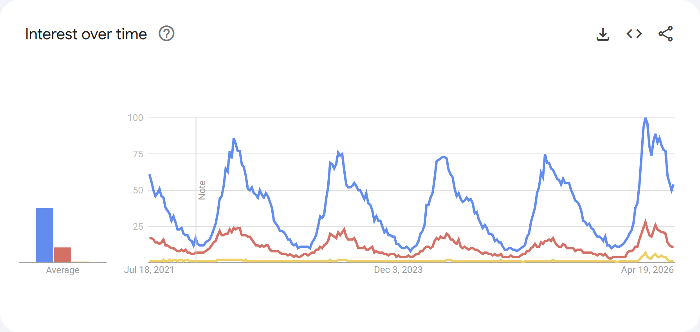
lawn mower / patio furniture / fire pit table 五年对比。割草机这种十年不变的品类在 2026 春天也凭空涨了 35%，说明 2026 年 Google Trends 的绝对指数发生了系统性抬升（口径/采样变化），不是真实需求变化。另一个佐证：fire pit table 2026 年 7 月已回落到 12（2025 年 7 月是 15）——如果是真实爆发，7 月不会比去年还低。1.2 季节性曲线（核心结论）
2022–2025 四年月均值，各词按自身峰值归一化为 100
| 月份 | fire pit table | portable fire pit | fire pit grill | camping table |
|---|---|---|---|---|
| 1月 | 44 | 59 | 44 | 38 |
| 2月 | 46 | 52 | 48 | 45 |
| 3月 | 65 | 64 | 67 | 57 |
| 4月 | 84 | 76 | 84 | 66 |
| 5月 | 100 | 95 | 100 | 88 |
| 6月 | 82 | 93 | 96 | 100 |
| 7月 | 62 | 78 | 80 | 98 |
| 8月 | 58 | 80 | 72 | 80 |
| 9月 | 57 | 70 | 66 | 65 |
| 10月 | 60 | 95 | 67 | 48 |
| 11月 | 65 | 97 | 71 | 50 |
| 12月 | 60 | 100 | 66 | 48 |
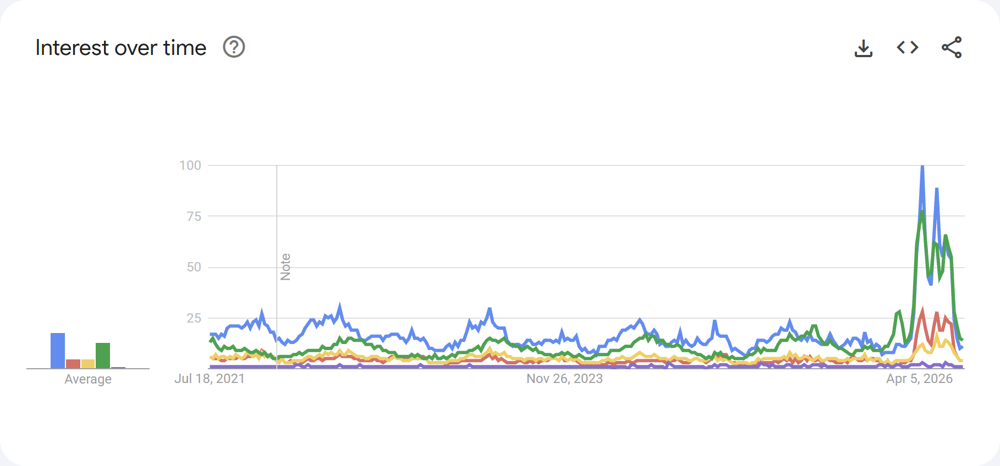
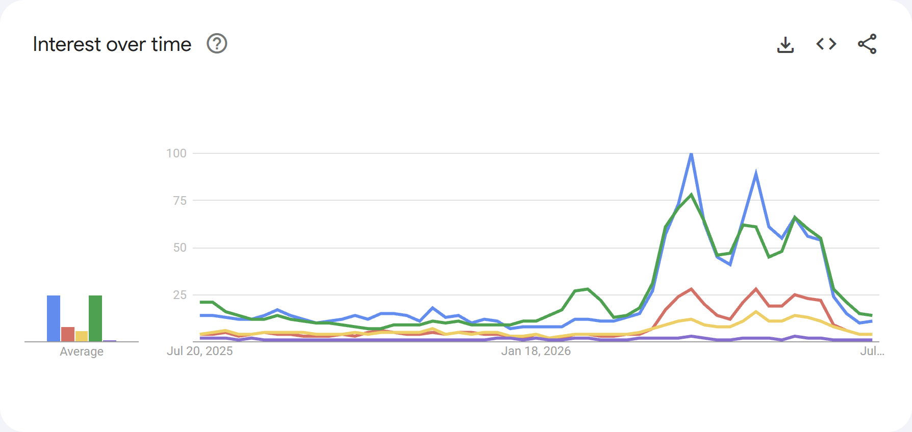
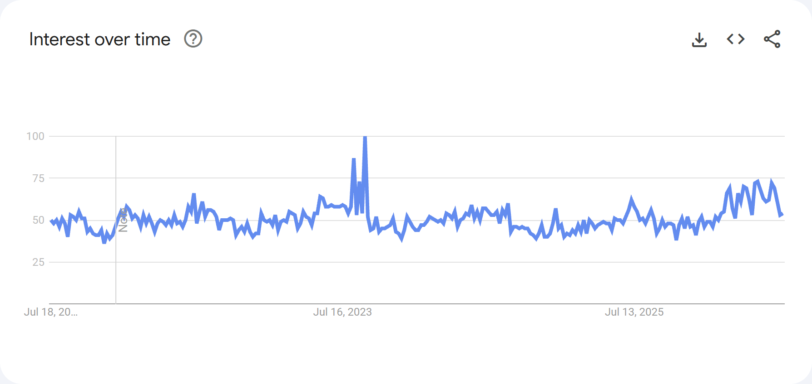
overlanding 5 年基本走平，2022–2025 稳定在 44–68 区间，无明显增长也无衰退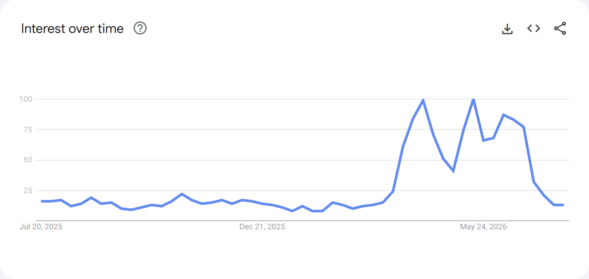
portable fire pit 12 个月曲线 + portable fire pit amazon +110%① 起量在 3 月，见顶在 5 月，最淡在 1 月
fire pit table / fire pit grill 曲线几乎完全一致：2 月底触底 → 3 月起量（46→65，+40%）→ 4 月加速（84）→ 5 月见顶（100） → 6 月回落 → 8–9 月见全年次低。
备货：2 月底之前必须到仓，4 月底前完成旺季主备货。
投放：3 月开始加预算，4–5 月是全年主战场，6 月中开始逐步收。
② camping table 的峰值比火盆晚一个月（6–7 月），尾巴更长
6 月 100 / 7 月 98，8 月还有 80。对 AroundFire 的含义：这个品类有两波流量——4–5 月的「后院/patio」波，和 6–8 月的「露营/户外」波。同一个产品，两波要用完全不同的素材和文案（后院聚会 vs 露营装备）。
③ portable fire pit 有明显的 10–12 月礼品季第二峰
10 月 95 / 11 月 97 / 12 月 100，比 5 月（95）还高。
⚠️ 该词绝对搜索量低（5 年内周指数在 2–8 之间波动），指数放大了噪声，结论强度中等；但四年数据都呈现同一形状，方向可信。
Q4 有一个「送礼」窗口，Nov–Dec 不该完全关掉预算，而是把叙事从"户外使用"切到"给爱露营的他/她的礼物"。
1.3 长期趋势：品类没在涨，也没在跌，是平的
fire pit table 缓慢下滑
| 年份 | 4月 | 5月 | 1月（最淡） |
|---|---|---|---|
| 2022 | 23 | 26 | 13 |
| 2023 | 20 | 25 | 9 |
| 2024 | 19 | 22 | 9 |
| 2025 | 16 | 20 | 9 |
2022 → 2025 呈缓慢下滑（4 月 23→16，约 -30%）。这是疫情后户外/庭院消费热退潮的正常回归。
camping table 是唯一在涨的
| 年份 | 5月 | 6月 | 7月 |
|---|---|---|---|
| 2022 | 12 | 14 | 14 |
| 2023 | 12 | 14 | 13 |
| 2024 | 13 | 16 | 13 |
| 2025 | 15 | 15 | 19 |
战略含义：「庭院火盆桌」这个盘子在慢慢缩，「露营装备」这个盘子在慢慢涨。AroundFire 如果把自己定位成 patio 家具的一种，是在逆水行舟；定位成便携露营装备，才是顺风向。
1.4 KBBQ 桌：小盘子，但完全不受季节影响，且正在被"便携化"
korean bbq table 5 年月度数据（2022–2025）在 5–16 之间来回，没有任何季节性形状——12 月和 5 月一样高。korean bbq grill 的搜索量是 korean bbq table 的 4–5 倍（月均 40–57 vs 8–16），说明用户更习惯搜 "grill" 而不是 "table"。
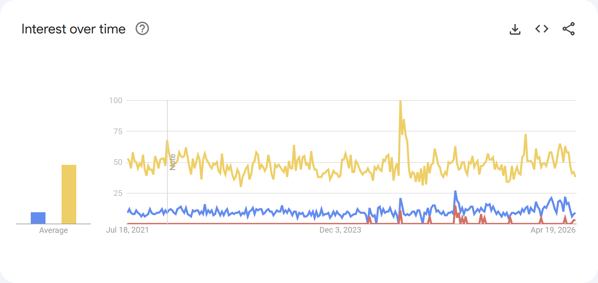
korean bbq grill 量级更大| 上升查询（Rising，5 年，美国） | 涨幅 |
|---|---|
| foldable korean bbq table | +1,300% |
| portable korean bbq table | +100% |
| foldable kbbq table | Breakout（突破性增长） |
| portable kbbq table | +110% |
战术：KBBQ 是 11 月–次年 2 月淡季的对冲品类；SEO/SEM 必须同时铺
korean bbq grill（大词）和 foldable/portable korean bbq table（长尾，增速最快）；素材要单独做一组 KBBQ 场景（室内/阳台/围坐涮烤），不要和火盆混投。1.5 全部上升查询汇总 —— 新兴需求信号
fire pit table（5 年 Rising，共 25 条，取 Top 5）
| 词 | 涨幅 |
|---|---|
| 5-piece steel patio fire pit conversation set… | +2,800% |
| mini fire pit for table | +1,250% |
| smokeless fire pit | +900% |
| electric fire pit table | +250% |
| patio set with fire pit table | +250% |
信号解读：smokeless fire pit +900% —— 「无烟」已经是这个品类的硬性期待，产品页如果没把烟的问题正面讲清楚，就是在漏转化。mini fire pit for table +1,250% —— 需求在向更小、更好收纳走，和便携定位一致。electric fire pit table +250% 是个值得警惕的信号：电火盆完全不受禁火令影响，是这个品类的替代威胁。
portable fire pit（5 年 Rising）
| 词 | 涨幅 |
|---|---|
| ignik firecan portable fire pit | Breakout |
| terraen portable fire pit | Breakout |
| belavi stainless steel portable fire pit | Breakout |
| city bonfires portable fire pit | +1,450% |
| city bonfire portable fire pit | +600% |
Top 5 全是品牌词——这个类目词的搜索行为已被几个具体品牌占据。含义：① 打泛词流量转化会很差（用户心里已经有品牌）；② AroundFire 必须做品牌词心智，否则永远在给别人的品牌词做背景板；③ 反过来，这几个品牌词是竞品词投放的现成清单。注意 belavi（Aldi 自有品牌，低价）出现在 Breakout 里，说明低价段在放量。
camping table（5 年 Rising） Top 5 全是露营泛内容词（best places to go camping in texas / best camping hammocks / camping checklist printable / best camping pillows），没有一条是"桌子"相关——说明搜这个词的人处在内容消费阶段而非购买阶段，适合做内容/SEO 引流，不适合直接打转化广告。
overlanding（5 年 Rising）：orbis overlanding +900%、prius overlanding +550%、overlanding meaning +130%、ford bronco +80% —— 全是车型/媒体/科普词，同样是内容属性。
fire pit table 和 portable fire pit 单独查询时，Google Trends 的 Related topics（相关主题）返回"数据不足"（"Hmm, your search doesn't have enough data to show here"）。这说明这两个词的搜索量偏小，Google 无法做主题聚类。1.6 地域分布（Interest by subregion，5 年，美国）
| 排名 | fire pit table | portable fire pit | fire pit grill | camping table | korean bbq table |
|---|---|---|---|---|---|
| 1 | Wyoming 100 | Wyoming 100 | Wyoming 100 | Wyoming 100 | Hawaii 100 |
| 2 | Pennsylvania 47 | Oregon 33 | South Dakota 70 | Montana 30 | Nevada 66 |
| 3 | South Dakota 45 | Washington 32 | Wisconsin 66 | Idaho 27 | District of Columbia 55 |
| 4 | Delaware 44 | Utah 28 | Ohio 59 | Washington 27 | Washington 55 |
| 5 | New Hampshire 41 | Idaho 28 | West Virginia 59 | Oregon 25 | California 55 |
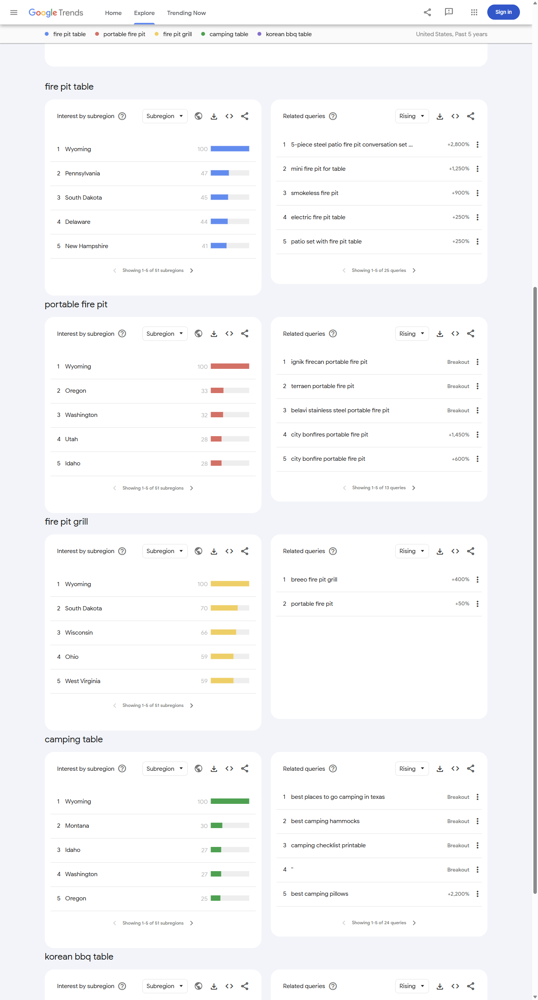
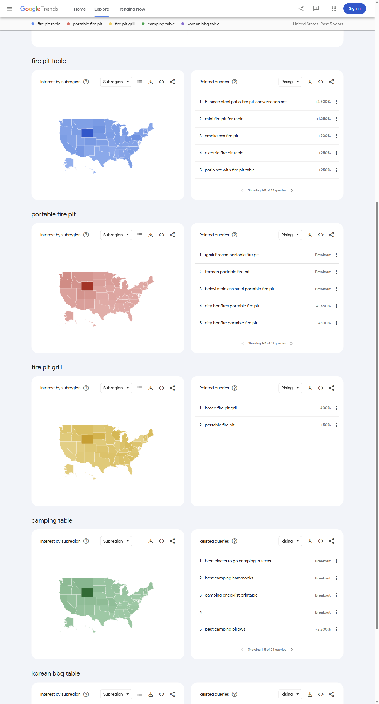
① 高关注度州 = 禁火令高发州
portable fire pit Top 5：WY / OR / WA / UT / ID；camping table Top 5：WY / MT / ID / WA / OR。
对照禁火令时间表：Utah 6 月底、Oregon 6 月中、Washington 6 月底–7 月中、Idaho 7 月底–8 月初。
这就是问题的全貌：对这个品类最热情的那批人，恰恰住在每年 6–8 月被明令禁止生火的地方。这不是可以靠优化投放解决的矛盾，只能靠丙烷 SKU 解决。
② 两个完全不同的人群和地域
fire pit table Top 5 里有 Pennsylvania / Delaware / New Hampshire —— 东北部有房有院的人群，是「后院家具」需求。portable fire pit Top 5 全是山地西部 —— 是「露营装备」需求。
广告账户结构上应该分开：东北/中西部打「后院聚会」，山地西部/太平洋西北打「露营越野」。
③ KBBQ 是第三个完全独立的盘子
Hawaii / Nevada / DC / Washington / California —— 这是亚裔人口密集区 + 城市人群的分布，和前面两个盘子毫无重叠。
进一步说明 KBBQ 不该和火盆混投：它的人群、地域、季节（全年无淡季）三者全部不同。
二禁火令 —— 这是 ROAS 2.2 的结构性根因
本节全部证据来自 .gov 一手来源（USFS / BLM / NPS / 州林业局 / 县消防辖区签署令），非 .gov 来源已单独标注。
2.1 最要命的一条：这个产品在法律定义上就是 campfire
"CAMPFIRE: A fire, not within any building… Campfires are open fires, usually built on the ground, from native fuels or charcoal, including charcoal grills."BLM Idaho Twin Falls Stage I Fire Restriction Order（签署令 PDF）
2.2 Stage 1 / Stage 2 分别禁什么（USFS 官方模板原文）
| 层级 | 禁止内容（原文） | 对应法条 |
|---|---|---|
| Stage I | "Building, maintaining, attending, or using a fire or campfire except within a developed recreation site, or improved site" | 36 CFR 261.52(a) |
| Stage II | "Building, maintaining, attending, or using a fire or campfire"（连正规营地火圈也禁），另加烟花、电锯时段、电焊/明火喷枪限制 | 36 CFR 261.52(a) |
| Stage III | 全面封闭（closure），禁止一切进入 | — |
| Stage I/II 通用豁免 | "Persons using a fire fueled solely by liquid petroleum or LPG fuels." | — |
2.3 各州禁火令时间轴（附实证公告日期）
| 州/区域 | 典型开始 | 典型解除 | 实证公告日期 |
|---|---|---|---|
| Arizona | 5 月中下旬（全美最早） | 7 月中下旬（季风一到即解） | Coconino NF Stage 1 = 2025-05-21 08:00；Coconino/Kaibab/Tonto 2026-07-20 全部解除 |
| New Mexico | 4 月底–5 月初 | 季风来即解，常 6 月松 | Santa Fe NF Stage 1 = 2025-05-04（原定至 9/30），2025-06-06 提前解除 |
| California | 5 月下旬起分区滚动，全年可发 | 冬雨前不轻易解 | 州立公园 2025-05-28 起禁木柴/炭火；Shasta-Trinity NF 2026-07-01；BLM CA 州级令 2026-02 签发，有效期至 2030 |
| Nevada | 6 月下旬–7 月初 | 10 月 31 日（写死在令里） | NE Nevada 2024-06-20 至 2024-10-31；Elko District 2025-07-01 至 2025-10-31 |
| Utah | 6 月下旬 | 秋季 | 全州州有地+非建制地 Stage 1 = 2025-06-28 00:01；NPS 东南犹他 2026-06-26 升级 |
| Colorado | 6 月中–8 月中（县级滚动） | 9 月中集中解除 | BLM Kremmling 2024-06-19；Garfield County 2025-09-12 解除、Routt 2025-09-24 解除；San Juan NF Stage 2 = 2026-07-01；Summit Fire Stage 2 = 2026-06-26 |
| Oregon | 6 月中–7 月初 | 秋雨 | 中俄勒冈公共土地 Stage 1 = 2025-06-16；Mt. Hood NF 全森林禁火 2026-07-01 |
| Washington | 6 月底–7 月中 | 秋雨 | DNR 东华盛顿禁火令 2025-07-18 / 2026-07-17；Olympic NF/NP 2026-06-26；North Cascades NPS 2026-06-29 |
| Idaho | 7 月底–8 月初 | 9 月中 | BLM Twin Falls Stage I 2025-07-31；东爱达荷 2025-08-07；Sawtooth NF+BLM+IDL 2025-09-17 解除 |
| Montana | 证据不足 | — | 仅查到 2024 记录。2025/2026 具体日期未找到证据 |
| Texas | 与西部不同：县级 burn ban 跟干旱走，冬春也发 | 无固定季节 | 官方以 Texas A&M Forest Service burn ban map 为准（媒体口径的县数未采信） |
② 西南部有「季风解禁」特例：AZ/NM 在 7 月季风来临后常提前解除（2026-07-20 AZ 三大森林全部解除）。这是全美唯一在盛夏反而放松的区域，也是一个同行不会去做的时间差机会。
③ 落基山/北部相反：9 月中旬前后集中解除（2025-09-12 / 09-17 / 09-24 多地实证）——这是木柴款预算回补的第一个明确信号。
2.4 什么燃料能用：看燃料，不看形态
| 燃料 | Stage 1/2 下 | 证据 |
|---|---|---|
| 木柴 / 炭 / 木颗粒 | 禁（无豁免） | Mt. Hood NF 2026-07-01 令："Campfires, charcoal and briquette fires, pellet fires and any other open fires are prohibited"；加州州立公园："wood and charcoal fires are not allowed" |
| 丙烷 / LPG / 液体燃料（带关阀） | 通常豁免 | BLM 内华达 2024 令："Controlled flame devices such as portable stoves and lanterns with shut-off valves, using gas, jellied petroleum, or pressurized liquid fuel are allowed."；NPS Arches 2026-06-26 令要求 "cleared of all flammable materials for at least 3 ft." |
有辖区直接点名放行 fire pit / fire table（可直接引用做卖点）
"Liquid or gas-fueled devices, including heating devices, stoves, grills, lanterns, fire pits, fireplaces or fire tables that include shut-off valves when used in an area at least three feet from flammable materials"Summit Fire & EMS District（CO）Stage 2，2026-06-26 生效
—— North Cascades National Park（NPS），2026-06-29 起
关键区分：多数辖区看「能否一秒关阀」；但部分 NPS 辖区看「是否为烹饪用途」——纯取暖/氛围的丙烷 fire pit 会被单独踢出豁免。安全表述是「propane stove / grill / heating device with shut-off valve」，不是笼统喊「fire-ban proof fire pit」。
CSA / UL 认证 = 可在 Stage 2 使用？→ 未找到美国官方依据。该说法只出现在加拿大规则和厂商博客里，美国官方口径始终是「shut-off valve + 燃料类型」。不可作为对美合规承诺使用。
2.5 公共土地 vs 私人后院：后院并不免疫
| 层级 | 管不管后院 | 证据 |
|---|---|---|
| USFS / BLM / NPS 的 Stage 1/2 | 不管（只管其管辖的联邦土地/道路/步道） | 令文限定 "on the public land, roads, and trails described herein"；另有豁免 "Resident owners and private lessees… provided such fires are within a residence" |
| 州级令（如犹他） | 管非建制私有地，建制市镇豁免 | 犹他 2025-06-28 Stage 1 覆盖 "all unincorporated private and state lands"，"Incorporated cities and towns are exempt" |
| 县 / 消防辖区禁火令 | 明确管后院 | Summit Fire（CO）Stage 2 直接禁 "backyard campfires"；North Metro Fire 明确 "applies to public and private property and at all types of residences"，同时点名放行 "Propane fire pit" |
| CAL FIRE 烧许可暂停 | 不管营火（常被媒体误读为「加州禁营火」） | "The suspension… does not apply to campfires within organized campgrounds or on private property" |
② 加州真正管火盆的是地方消防规范。例：Corona 市法典 15.12.110 规定住宅户外火盆须 "only burn a gas flame and not wood or other solid fuel"，烧固体燃料的装置在距可燃建筑 25 英尺内禁止。
HOA 常见限制（来源为 CAI 行业协会科普站，非 .gov）：禁木柴、允许或要求丙烷/天然气；直径上限约 3 ft、离建筑/围栏 10 ft、时段宵禁、须配灭火器与防火星网。
2.6 禁火令 × 季节性叠加后的投放/备货日历
| 月份 | 搜索热度指数 | 禁火令态势 | 建议动作 |
|---|---|---|---|
| 1–2 月 | 全年最淡（44–48） | 西部基本无令 | 木柴款低预算维持；主力切 KBBQ（全年无淡季）+ 春季预售；2 月底货必须到仓 |
| 3 月 | 起量（65，环比 +40%） | 无令 | 全面加预算，抢在竞品前面把再营销池建起来 |
| 4 月 | 84 | NM 率先发令（5/4 前后） | 全国主投；AZ/NM 开始单独降预算 |
| 5 月 | 峰值 100 | AZ 5/21、CA 州立公园 5/28 | 全年主战场，预算顶格；同时开始铺 propane/关阀教育内容；旺季备货 4 月底前完成 |
| 6 月 | 82（开始回落） | UT 6/28、CO 6/19–、OR 6/16、NV 6/20–29、WA/NPS 6/26–29 密集发令 | 西部木柴款主投窗口关闭；预算切东部/中西部/南部；后院场景改推 HOA-friendly propane |
| 7 月 | 62 | 峰值：Stage 2 大面积落地（San Juan 7/1、Mt.Hood 7/1、Shasta-Trinity 7/1、WA DNR 7/17–18、ID 7/31） | 西部木柴款最低预算；丙烷线全力；AZ/NM 单独建 campaign 盯解禁（2026-07-20 已解），解禁 48h 内加预算 |
| 8 月 | 58（全年次低） | ID 8/1、8/7；CO 二次收紧 | 北部山区继续压制；南部/东部承接；camping table 此时仍有 80 热度，可用露营叙事续命 |
| 9 月中 | 57 | 集中解除期（9/12、9/17、9/24 实证） | 木柴款预算回补的第一信号；配合秋季露营/后院取暖 |
| 10–12 月 | fire pit table 60–65，但 portable fire pit 冲到 95–100 | NV 令 10/31 到期，多数州解除 | 木柴款全力；切「送礼」叙事——这是被大多数同行忽略的第二个高峰 |
2.7 广告文案合规红线
✅ 可说
Propane-fueled, with shut-off valve — permitted under many Stage 1 & Stage 2 fire restrictions when used 3 ft from flammable material.
（措辞直接对齐官方条文）
⚠️ 必须加免责：Always check local restrictions before use.（几乎所有官方页面都用这句收尾）
❌ 不可说
Fire-ban proof / legal everywhere during burn bans —— North Cascades NPS 一条反例就构成虚假宣传。
CSA/UL certified = allowed under Stage 2 —— 美国未找到官方依据。
这也解释了为什么 Ignik FireCan 能在
portable fire pit 的 5 年 Rising Queries 里排第一并拿到 Breakout 标记——它卖的是禁火令期间唯一合法的那个形态。

② Texas 县级 burn ban 的具体县数只有非 .gov 媒体口径，未采信；官方以 Texas A&M Forest Service burn ban map 为准。
③ fs.usda.gov 全站对抓取返回 403，涉及 Inyo NF、Coconino NF 的逐字条文为搜索引擎摘录，未能页面直取，对外文案使用前建议人工点开复核。
④ CSA/UL 与禁火令的关系在美国未找到官方条文（加拿大有）。
三渠道结构
全部数据核查日期 2026-07-21。Amazon 评价数/星级为真实浏览器抓取商品页或搜索结果页 DOM；零售商铺货为对应零售商站内商品页/品牌页实测。所有「未找到」均为多路搜索未找到证据，不是穷尽性否定。
3.1 AroundFire 自己在哪些渠道：一条腿走路
| 渠道 | 状态 | 证据 |
|---|---|---|
| 官网 DTC（Shopify） | ✅ 唯一可验证的销售渠道 | Gather Lite From $189（站内 57 条评价 4.91★）、Gather Grande $239（47 条评价，43 条五星） |
| Amazon | ❌ 未找到证据 | 用真实浏览器搜 aroundfire grill table（US 站），153 条结果里首屏 16 条全是他牌，无任何 AroundFire listing 或品牌店；官网首页 HTML 全文搜 "amazon" 零命中 |
| REI / Walmart / Home Depot / Dick's / Target / Ace / Lowe's / Costco / Scheels / Bass Pro / Backcountry | ❌ 全部未找到证据 | 逐站搜索无商品页 |
| 经销商网络 | 🟡 只有招商页，没有已合作方 | Dealers & Distributors 页实测为纯招募表单，"excited to offer special pricing and programs for new dealers"，页面上没有列出任何一家已合作零售商 |
| TikTok Shop | ❌ 未找到证据 | 实测账号 tab 结构为「视频 / 短剧 / 转发 / 收藏 / 已赞」，无 Shop tab |
| TikTok 账号本身 | ⚠️ 54 粉丝 / 797 赞 / 27 关注 | 实测账号主页 |
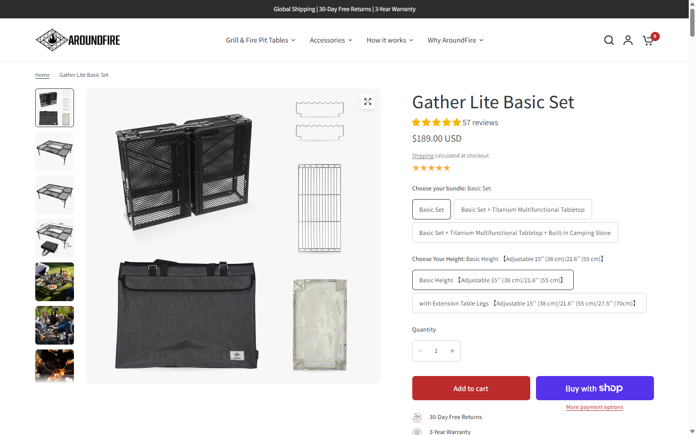
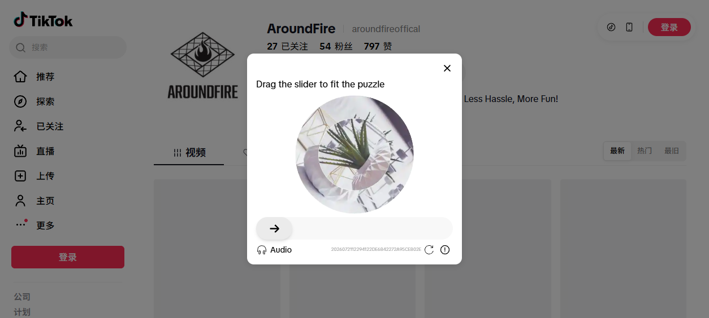
也就是说，本报告指出的两个最大机会（KBBQ 全年无淡季 + 丙烷合规），产品上已经有了，商品化和叙事上完全没做。这是本次调研里 ROI 最高的一条——不需要开新模具，只需要重新组合和包装现有 SKU。
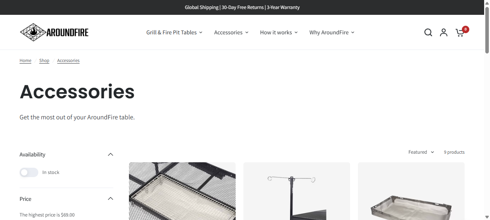
3.2 渠道矩阵（品牌 × 渠道）
| 渠道 | AroundFire | Solo Stove | Breeo | BioLite | Nomad | Gather | Ignik | Snow Peak | Fireside |
|---|---|---|---|---|---|---|---|---|---|
| 官网 DTC | ✅ 唯一 | ✅ 主力 | ✅ 主力 | ✅ 主力 | ✅ 主力 | ✅ 主力 | ✅ 主力之一 | ✅ 主力+门店 | ✅ 有 |
| Amazon 存在 | ❌ | 🟡 有官方 listing | 🟡 有官方 listing | 🟡 有 listing | ✅ 品牌店 | ❌ | ✅ 品牌店 | ✅ 品牌店 | ✅ 品牌店 |
| REI | ❌ | ✅ | ❌ | ✅ | ❌ | ❌ | ✅ | ✅ | ✅ |
| Walmart | ❌ | ✅ | ✅ | ❌ | ❌ | ❌ | ✅ | ❌ | ✅ |
| Target | ❌ | ✅ | ❌ | ❌ | ❌ | ❌ | ❌ | ❌ | ❌ |
| Home Depot | ❌ | ❌ | ✅ | ❌ | ❌ | ❌ | ❌ | ❌ | ✅ |
| Lowe's | ❌ | ❌ | ❌ | ❌ | ❌ | ❌ | ❌ | ❌ | ✅ |
| Ace Hardware | ❌ | ❌ | ✅ | ❌ | ❌ | ❌ | ✅ | ❌ | ✅ |
| Dick's | ❌ | ✅ | ❌ | ❌ | ❌ | ❌ | ❌ | ✅（配件） | ✅ |
| Bass Pro / Cabela's | ❌ | ❌ | ❌ | ❌ | ❌ | ❌ | ✅ | ✅ | ❌ |
| Backcountry | ❌ | ❌ | ❌ | ❌ | ❌ | ❌ | ✅ | ✅ | ❌ |
| Huckberry | ❌ | ❌ | ❌ | ❌ | ✅ | ❌ | ❌ | ❌ | ❌ |
| 独立经销商网络 | 🟡 仅招商页 | ✅ | ✅ Dealer Locator | ✅ | 未确认 | ✅ 高端专营店 | ✅ 100+ 门店 | ✅ | ✅ |
| TikTok Shop | ❌ | ❌ | ❌ | ❌ | ❌ | ❌ | ❌ | ❌ | ❌ |
| 主力价格带 | $189–239 | $200–500+ | $300–800+ | $200–300 | $399+ | $1,999–6,999 | $199–300 | $159–350+ | $119–199 |
关于 TikTok Shop 的统一说明：TikTok 与 shop.tiktok.com 对自动化访问全面拦截（返回 JS 空壳/验证页），本次九个品牌一律记为「未找到证据」，不做任何推断。本次浏览器位于非美国 IP，TikTok Shop 入口存在地区可见性差异。要确认必须人工用美国 IP 打开 TikTok App 内 Shop 搜索。
3.3 Amazon 上的可验证评价体量（反推销量级别）
| 品牌 / 产品 | ASIN | 星级 | 评价数 | 过去一个月购买量 |
|---|---|---|---|---|
| Outland Living 便携丙烷火盆 19" | B00KY4S388 | 4.8★ | 17,762 | 2,000+ |
| Outland Living Firebowl 24" | B00FWKVGQ0 | 4.8★ | 9,400 | 600+ |
| Outland Living 19"（另一 SKU） | B007UMD2L0 | 4.8★ | 4,011 | 300+ |
| Amazon Basics 便携烧烤格栅 | B074N1W4G8 | 4.6★ | 3,900 | 1,000+ |
| Outland Living 21" | B073SMX1TC | 4.8★ | 3,786 | 500+ |
| Solo Stove Mesa XL | B0BV6B3QWG | 4.6★ | 3,761 | 900+ |
| Fireside Outdoor Pop-Up 24"+Heat Shield | B07GH8984N | 4.7★ | 1,477 | — |
| Fireside Outdoor Pop-Up 24" 基础款 | B07G9NY6G8 | 4.7★ | 1,435 | 50+ |
| Ciays 丙烷火盆 19"（带烤架） | B0D5QG87V2 | 4.6★ | 799 | 500+ |
| Snow Peak Pack & Carry Fireplace (S) | B00FR6CFIM | 4.6★ | 358 | — |
| Ignik FireCan | B09LB1BHLB | 4.6★ | 348 | — |
| Amazon Basics 便携丙烷火盆 19" | B0B12RQ6RP | 4.5★ | 322 | 200+ |
| Breeo X Series 24 Corten | B09WG9DDPS | 4.6★ | 268 | 400+ |
| Snow Peak Takibi Fire and Grill | B074KHRHS1 | 4.8★ | 109 | — |
| Ignik FireCan Deluxe | B0BSXRT8ZN | 4.5★ | 73 | — |
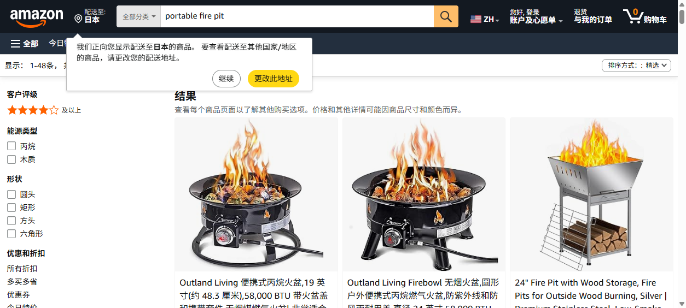
① 品牌大小 ≠ Amazon 体量
Breeo 是公认头部品牌之一，但 Amazon 主力 SKU 只有 268 条评价——却有 400+/月的购买量。说明 Breeo 的 listing 是新近才认真做的，Amazon 对它是补充渠道不是主战场。Solo Stove 反过来，Mesa XL 一个 SKU 就 3,761 条。
② 真正的 Amazon 之王是 Outland Living
四个 SKU 加起来约 35,000 条评价，全部是丙烷。这个品类在 Amazon 上是「丙烷 + 性价比」的天下，DTC 明星品牌靠品牌溢价活在自己官网和精品零售里。
③ BioLite 是「重 REI 轻 Amazon」打法
BioLite FirePit+ 在 Amazon 搜索前列没出现，但在 REI 有品牌页和 296 条评价 4.1★。
3.4 这个品类靠什么渠道走量？三种可验证的打法
| 打法 | 代表 | 特征 |
|---|---|---|
| A. 全渠道铺满型 | Ignik、Fireside Outdoor | 官网 + Amazon 品牌店 + 大众零售（Walmart/Ace/Home Depot/Lowe's）+ 专业户外（REI/Backcountry/Scheels/Bass Pro）+ 独立门店（Ignik 实拉到 100+ 点位）。Fireside 靠这套把 Amazon 单 SKU 做到 1,477 条评价——它的价格带（$119–199）恰恰最接近 AroundFire |
| B. 品牌溢价型 | Solo Stove、Breeo、BioLite、Snow Peak | 官网为核心，选择性进精品零售，Amazon 有店但不是主战场。靠内容和品牌心智拉动，能撑更高价 |
| C. 手工奢侈品型 | Gather Grills（$1,999–6,999） | 纯 DTC + 高端烤炉专营经销商，刻意回避所有大众平台。按单生产、6–8 周排产 |
3.5 三个必须回答的问题
问：纯 DTC 能做多大？
有一个反例证明能做很大：Gather Grills 纯 DTC + 高端经销商，卖到 $1,999–6,999。但它的前提是极高客单 + 手工稀缺性 + 按单生产——这套打法在 $189–239 的价格带上不成立，因为这个价位撑不起获客成本。
在 $119–350 这个价格带里，九个品牌中没有一个是纯 DTC 的：Solo Stove、Breeo、BioLite、Ignik、Snow Peak、Fireside Outdoor 全部至少有 Amazon 官方店 + 一到多个大型零售。AroundFire 是这个价格带里唯一的纯 DTC 玩家。
结论：$189–239 的纯 DTC 有天花板，但天花板不是渠道决定的，是品牌决定的。Solo Stove 能靠官网卖高价，是因为它先用十年内容把「smokeless fire pit」这个概念教育成了自己的代名词（证据：该词 5 年 Rising +900%）。AroundFire 目前 TikTok 54 粉，没有任何品牌资产可以支撑纯 DTC 的溢价。
问：Amazon 是不是必须进？—— 是。三条独立证据
portable fire pit amazon过去 12 个月上升 +110% —— 用户在主动把这个品类和 Amazon 绑定搜索。不进 Amazon 等于把这批已经产生购买意图的流量白送。- 本次核查的九个品牌里，七个在 Amazon 上有可验证的官方商品存在，只有 Gather Grills（$2,000+ 手工奢侈品）和 AroundFire 没有。
- Amazon 上的评价体量是品类信任资产。Fireside Outdoor 靠 1,477 条评价建立的社会证明，AroundFire 官网 57 条站内评价无法替代——站内评价对新客几乎没有说服力，因为品牌自己可以控制。
但要带一个前提：别裸进。Amazon 这个类目是 Outland Living（35,000 条评价、丙烷、性价比）的天下，Amazon Basics 也已下场。正确的进法是打差异化词——搜 fire pit grill table portable 返回的 Top 10 里没有一个是「火盆+烤架+桌面」一体化产品，全是配件。这个形态在 Amazon 上是空白的，AroundFire 有机会定义这个类目词。
问：这个品类靠什么渠道走量？
看铺货最广的两家（Ignik、Fireside Outdoor）能看出走量逻辑：它不是一个「线上种草→官网成交」的品类，而是一个「线下看见实物→当场买」的品类。$200 的金属家具，用户想摸一摸、想知道有多重、想确认收起来到底多大。这解释了为什么 Ignik 要铺 100+ 个独立户外门店、为什么 Fireside 要进 Lowe's 和 Home Depot。
对 AroundFire 的排序建议：① Amazon 官方品牌店（最低成本拿到第三方信任 + 接住搜索流量）→ ② 社媒/达人内容（54 粉是硬伤，这个品类增长只能靠需求创造）→ ③ REI / Backcountry 这类专业户外零售（也是「露营装备」定位的背书）→ ④ 大众零售（Walmart/Ace/Home Depot）放最后——那是打价格战的地方，$189–239 现在还不该去。
四市场规模：不给数字，只给可验证的间接信号
4.1 为什么不给数字
按调研要求，实际去搜了市场规模数据，结果如下：
| 来源 | 口径 | 数字 |
|---|---|---|
| Spherical Insights | 北美 fire pits 市场 2025 | $3,273.7M |
| Grand View Research | 北美 fire pits 市场 2024 | $3.09B |
| Polaris Market Research | 全球 fire pits 市场 2024 | $7.67B |
| market.us | 全球 CAGR | 6.8% |
| Grand View Research | 北美 CAGR 2025-2030 | 5.6% |
| Spherical Insights | 北美 CAGR 2026-2033 | 5.3% |
结论：无可信一手来源，本报告不给市场规模数字。任何在提案里引用上述数字的做法，都是把一个来路不明的营销数字当决策依据。
4.2 可验证的间接信号（这些才是能用的）
信号 A · Amazon 头部单品体量 —— 品类天花板不高，但头部很集中
- Outland Living 一家四个 SKU 约 35,000 条评价，是绝对老大，且四个 SKU 全是丙烷。第二名 Fireside Outdoor（1,435）只有它的 4%。头部极度集中、腰部很薄。
- Top 10 里 6 个是丙烷产品，木柴/炭产品只有低价小件。这是继禁火令分析之后，对「丙烷才是主流形态」的第二个独立证据。
- Amazon Basics 已经进场（322 条评价，200+/月）。平台自营白牌下场，通常意味着这个类目已经标准化、拼价格——对 $189–239 是个警告：不能靠"便携火盆"这个功能定义自己，必须靠"一体化桌+烤+火"的形态差异化。
- "过去一个月购买量"是 Amazon 官方展示的一手数据（非估算）。头部单品 2,000+/月、腰部 300–500/月——这个类目在 Amazon 的头部月销量级是千级，不是万级。这是一个中等规模的利基类目，不是大盘生意。
信号 B · AroundFire 的产品形态在 Amazon 上没有对标竞品
搜索 fire pit grill table portable（按评价数排序）返回的 Top 10 里：没有一个是"火盆+烤架+桌面"一体化产品。全部是配件类——丙烷调压阀、火盆防雨罩、篝火烤网、Solo Stove 的环绕桌面配件、桌面小火盆。
解读：这个形态在 Amazon 上目前没有已建立心智的直接竞品。既是机会（先进者可以定义类目词），也是风险（说明这个形态还没有被大规模验证过需求）。配合 fire pit grill 5 年 Rising 只有 2 条查询的事实，可以判断："火盆烧烤桌"目前还不是一个用户会主动去搜的类目，需求需要被创造，不是被捕获。
信号 C · 玩家结构 —— 三个价格层，中间层最薄
| 层级 | 价格带 | 渠道特征 |
|---|---|---|
| 入门/白牌 | $50–150 | Amazon Basics、Ciays、Odoland、TBMLC、Belavi、City Bonfires —— 几乎纯 Amazon / 大卖场，拼价格 |
| 中间层 | $119–350 | Fireside、Ignik、AroundFire、Snow Peak、Outland —— 分化最大：有的全渠道铺满，有的纯 DTC |
| 高端/手工 | $2,000–7,000 | Gather Grills —— DTC + 高端专营经销商 |
AroundFire 处在中间层的中位偏上。这一层是竞争最激烈的位置——上面有 Snow Peak 的品牌溢价，下面有 Amazon Basics 和 Belavi 的价格压迫。在这个位置上，渠道广度就是生死线。

信号 D · 搜索量级本身说明这是个小盘子
- Google Trends 对
fire pit table和portable fire pit单独查询时，Related topics 返回"数据不足" —— Google 只在搜索量过阈值时才做主题聚类，这两个核心品类词都没过。 fire pit grill的 5 年 Rising Queries 只有 2 条，而正常有量的词会返回 13–25 条。korean bbq table的 5 年周指数长期在 1–3 之间。
结论：纯靠 SEM/SEO 捕获现有搜索需求，天花板很低。增长必须来自需求创造——社媒内容、达人种草、场景教育，而不是抢关键词排名。这一点和 AroundFire 目前 TikTok 只有 54 粉的现状形成了最刺眼的对比。
Amazon BSR 具体排名数字：Best Sellers 分类页面对本次抓取返回空 DOM（客户端渲染 + 反爬），只取到了搜索结果页的评价数与"过去一个月购买量"。BSR 排名未获取。
Amazon 站内搜索接口对部分查询返回反爬挑战页，因此所有"未找到 X 品牌"的结论均为「多路搜索未找到证据」，不是穷尽性否定。
TikTok Shop 的开店状态：全面拦截；本次仅通过账号主页 tab 结构判断，且浏览器位于非美国 IP，结论强度为中等。
Google Trends 数据为浏览器实测抓取页面内嵌数据表（非 API），月度值由周度值算术平均得出，可复现。浏览器位于非美国 IP，Amazon 界面为中文/日本配送区，商品可见性存在地区差异。
五结论与行动清单
但这条曲线有两个被忽略的补丁：
camping table 的峰值晚一个月（6–7 月）且尾巴拖到 8 月，portable fire pit 有 10–12 月的礼品季第二峰。把这两块补上，全年就只剩 1–2 月一个真空期，而那个真空期正好由全年无淡季的 KBBQ 填。三个最该立刻做的动作
- 把已有的燃气能力从「$33 配件」升级成一个独立定位的 SKU。证据链是闭合的：木柴/炭 = 法律定义上的 campfire = Stage 1 起被禁；丙烷带关阀 = 官方条文点名豁免；地域数据显示对
portable fire pit最热情的五个州正是每年 6–8 月禁火的那批；Amazon 评价数 Top 10 里 6 个是丙烷，老大 Outland 四个 SKU 全是丙烷。这是本报告里证据最硬的一条建议。 - 把 KBBQ 从「$37 烤盘配件」升级成一条独立产品线和独立 campaign。四个趋势词全部指向 AroundFire 的产品形态；KBBQ 全年无季节波动、地域分布与火盆完全不重叠。这是唯一能补 11 月–2 月淡季的品类，且产品已经有了。
- 渠道必须开第二条腿。详见第三节。
明确不建议做的事
- 不要在 6–8 月对西部各州继续投木柴款的转化广告。「禁火令期间」广告组 ROAS 2.2 不是优化问题，是合规问题，优化不动。
- 不要打
camping table/overlanding的转化广告。这两个词的 Rising Queries 全是内容型查询（露营地推荐、吊床、装备清单、车型科普），搜的人在消费内容不在买东西。只适合做内容/SEO 引流和再营销池建设。 - 不要在文案里承诺「fire-ban proof」或「CSA/UL 认证即可在 Stage 2 使用」。前者有 North Cascades NPS 的明确反例，后者在美国没有官方依据。
- 不要引用网上的市场规模数字。